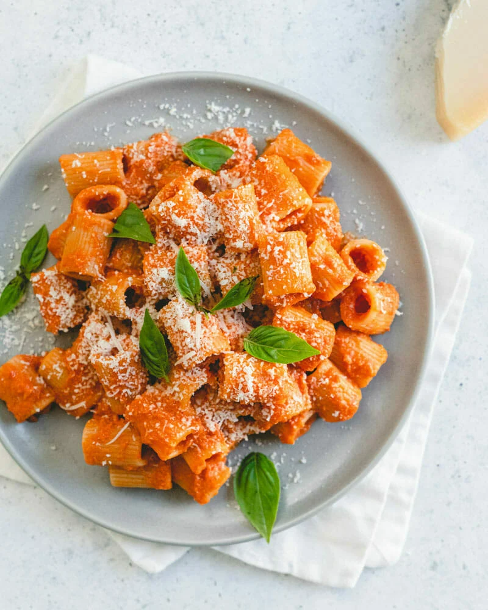

Spencer's Vodka Pasta Recipe

Description
This dish is the easiest dish to make. It is really good to make to a family dinner, a cute date and if you want a quick meal after a long day. Follow the steps below to make a yummy bowl of pasta. NO! YOU WILL NOT GET DRUNK OFF THIS PASTA!
Ingredients
- Tomato Paste
- Vodka
- Pasta(any kind)
- Heavy Cream
- Parmesan
- onion
- garlic
- olive oil
- red pepper flakes
Steps
- Saute the minced onion and garlic with the olive oil and a pinch of salt.
- Then, add the tomato paste and crushed red pepper flakes. You want to cook the tomato paste until it turns a very dark red color.
- Pour in the vodka and cook it for about a minute. You really want it to sizzle up and burn off.
- Next, add the heavy cream and stir it until smooth. Turn the sauce off. Now it’s time to cook the pasta!
- Bring a pot of salted water to a boil. Add the pasta when it’s boiling and cook it just shy of 1 minute until al dente. I like to do this so we can cook the rest of the pasta in the sauce.
- Then, scoop out about a cup of pasta water. Pour 1/2 cup of pasta water into the sauce, add the grated cheese and then taste it. Add more salt to your liking. I added a few more pinches of salt.
- Pour in the drained pasta and then the cold butter. Stir for 1 minute. This may seem like a long time but it really does help emulsify the sauce.
- Serve it up and garnish with more Parmesan-Reggiano and minced Italian parsley.
Link to recipe